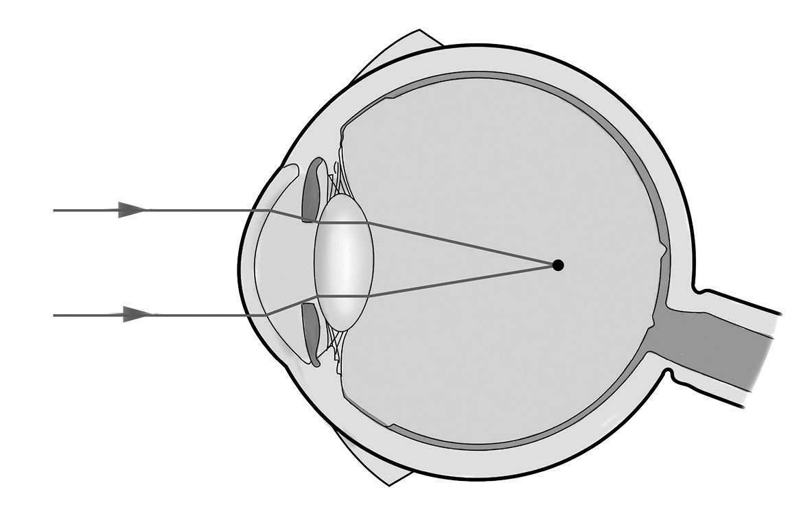
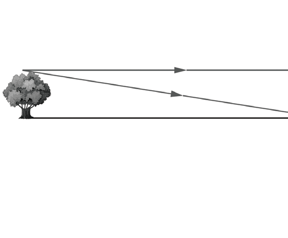
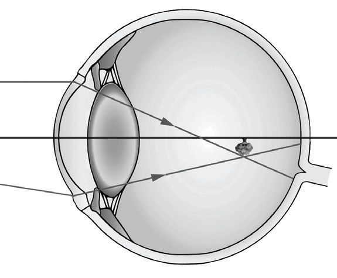
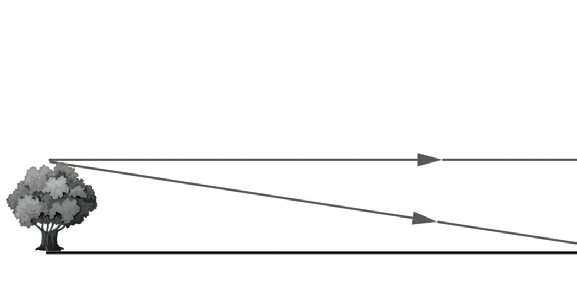
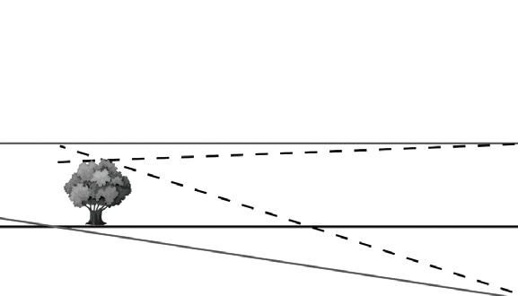
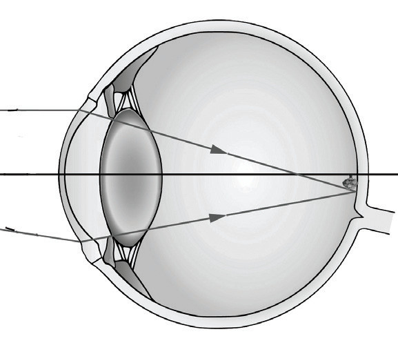

from short-sightedness can see nearby objects clearly but not distant objects. Figure 6.21 illustrates a myopic eye.

Lens
Cornea
Focal point
Retina
Correction of myopia
To correct myopia, rays of light from a distant object should be diverged before entering the eye. Therefore, correcting the myopic eye involves the use of a concave (diverging) lens, which forms the image of a distant object close to the eye lens. The image formed by the glass lens is then focused onto the retina by the eye lens. Figure 6.22 illustrates the correction of a myopic eye.


Image formed before the retina
Myopic eye



Diverging lens
Image formed on the retina
Myopic eye
Figure 6.22: Correcting a myopic eye